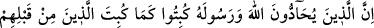
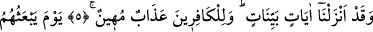
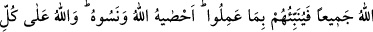
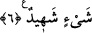

ALLAH ONLARIN
HEPSİNİ DİRİLTECEK
5. Allah’a ve Rasûlüne karşı gelenler, kendilerinden öncekilerin alçaltıldığı gibi
alçaltılacaklardır. Biz apaçık âyetler indirmişizdir. Kâfirler için küçük düşürücü bir
azap vardır.
6. O gün Allah onların hepsini diriltecek ve yaptıklarını kendilerine haber
verecektir. Allah onları bir bir saymıştır. Onlar ise unutmuşlardır. Allah her şeye
şâhiddir.
“Allah’a ve Rasûlü’ne karşı gelenler,” yâni onlara düşmanlık eden ve karşı
gelenler… Allah dostlarına düşmanlıkta bulunmak da böyledir. Çünkü Allah dostlarına
düşmanlık eden Allah’a düşmanlık etmiş olur. Zira düşmanlık edilen her iki kişiden
birine olan düşmanlık ve muhâlefet aynı zamanda diğerine de yapılmış demektir.
Onlardan birine karşı gelmek de diğerine karşı gelmektir. Ancak Allah Teâlâ’nın
hükümlerinin zikredildiği sırada ve yerde yalnız “karşı gelme”nin zikredilerek
“düşmanlık” kavramının yer almaması mânânın en güzel yerlerinden birini
oluşturmaktadır. Yâni onlar, Allah ve Rasûlü’ne muhâlefet ederler, emir ve nehiylerin
sınırlarını çiğnerler.
Bazı âlimlere göre âyet-i kerîmede geçen mühâdde kelimesi, demir anlamındaki
hadid kelimesinden türetilmiştir. Bu da gerek gerçek demirle gerekse demir gibi katı ve
şiddetli bir tartışma ve çekişme tarzında bir karşı koymak demektir. Diğer bazı âlimlere
göre de âyet-i kerimedeki yühâddûne fiilinin anlamı, “Allah ve Rasûlü’nün koydukları
hükümden başka hüküm seçip koyanlar” demektir. Burada şeriatın çizdiği sınır ve
hükmüne aykırı olarak hüküm ve sınır koyup adına kanun ve benzeri isimler veren kötü
hükümdarlara, idarecilere çok büyük bir tehdid vardır.
Zulmün temelini atan bir padişah
Kendi mülkünün duvarının dibini oyar.
Allah’a karşı gelen bu kişiler “kendilerinden öncekilerin alçaltıldığı gibi